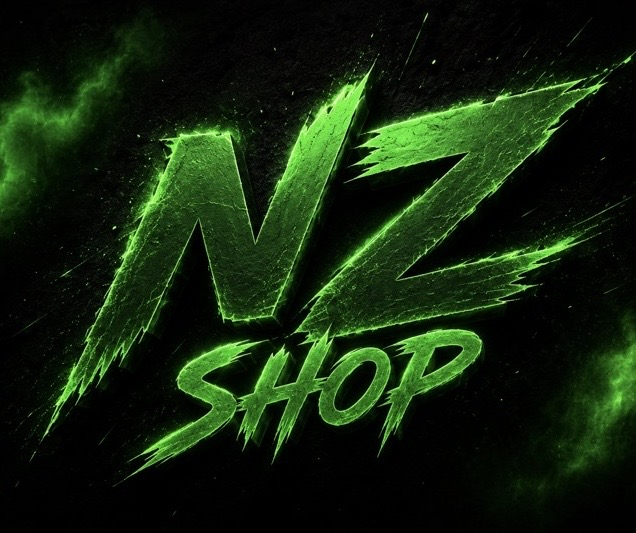

Photo à venir — uploade tableau-screenshot.jpg dans le repoTableau Staff
Un tableau de bord simple pour ton équipe de staff. Chaque case représente un joueur suivi : tu notes son ID, tu écris ce qu'il a fait (avertissement, sanction, comportement à surveiller...), et tu gardes tout ça organisé en un coup d'œil. Copie l'ID en un clic, supprime une case précise ou vide tout le tableau d'un coup. Léger, sans configuration compliquée, prêt à l'emploi sur ton serveur.
3 €Achat unique
Acheter